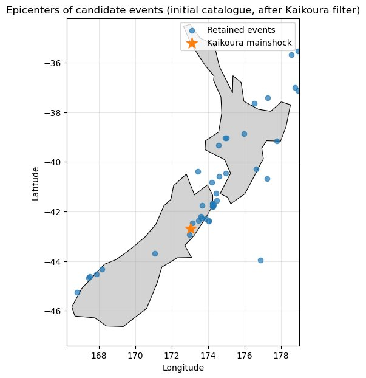
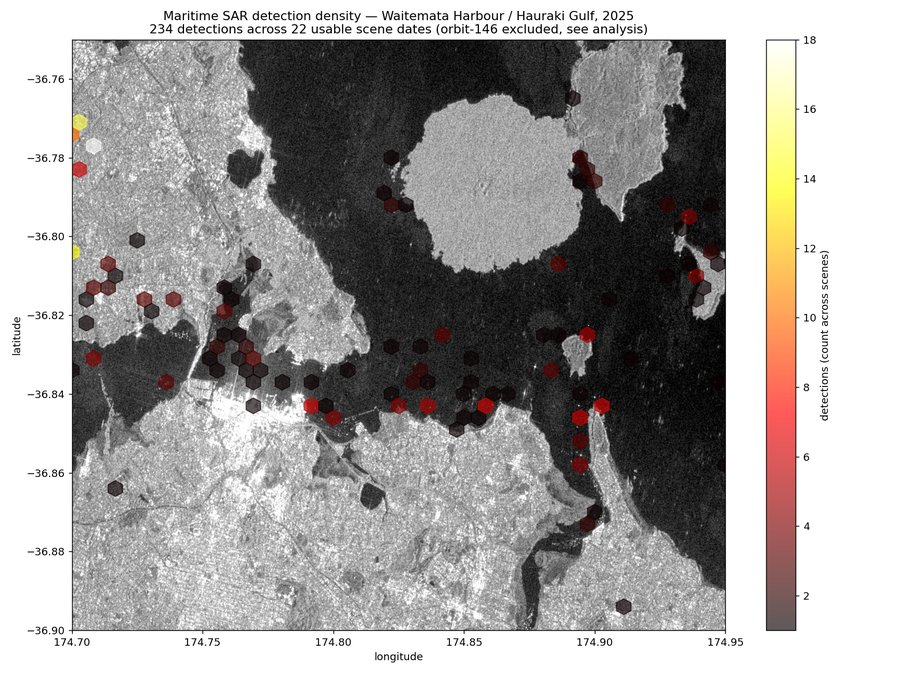
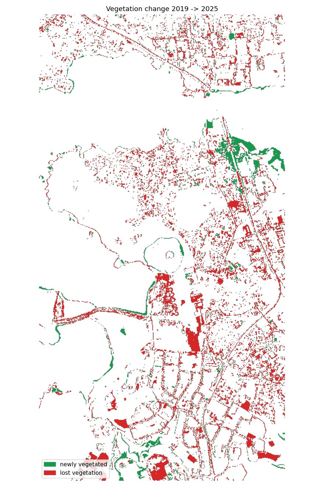
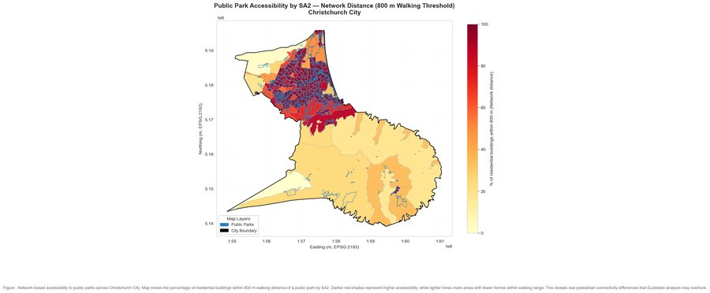
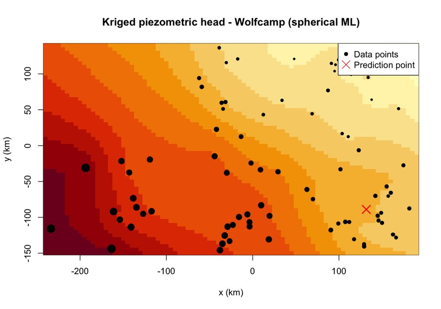

01. About
I moved from India to New Zealand to do a Master of Applied Data Science at the University of Canterbury, and I'm now based in Auckland. I like data with some friction in it: messy sensor readings, crowd-sourced reports, satellite imagery, because getting something true out of that mess is where the interesting work happens. My focus areas are geospatial data science (spatial statistics, satellite imagery, machine learning) and applied AI (multi-agent systems, RAG), using real datasets like GeoNet, Sentinel imagery, and NZ open data. I'd rather ship something smaller that holds up under scrutiny than something flashy that doesn't.
I've been a Teaching Assistant in Geospatial Data Science at UC, and built a diversity and inclusion scoring model for New Zealand Cricket. I enjoy the teaching side just as much as the modelling.
02. Testimonials
“He was enthusiastic, reliable, hardworking, and consistently went above and beyond to support our international students.”
View full recommendation on LinkedIn →
“What stood out most was his ability to turn complex data into clear, useful insights that supported New Zealand Cricket's inclusion strategy.”
View full recommendation on LinkedIn →
03. Projects
A selection of independent projects using public datasets. Source code for each is linked below.
A Two-Agent System for Comparing NZ Mobile & Broadband Plans
A Research Agent and an Advisor Agent with distinct roles and tool sets, using retrieval-augmented generation over real provider terms and conditions to check whether a plan is actually good value.
View on GitHub ↗
A Ground Motion to Intensity Model for NZ Earthquakes
Linking crowd-sourced earthquake felt-reports to instrumental ground motion using spatial buffer joins, cluster-robust regression, and cross-validated model selection, built on eight years of GeoNet data.
View on GitHub ↗
Maritime Traffic Density from SAR Satellite Imagery
A detection density map built from 31 Sentinel-1 radar scenes across a full year over Auckland's Hauraki Gulf, including an analysis of how satellite viewing geometry affects detection reliability.
View on GitHub ↗
Satellite-Based Habitat Change Detection, Manukau Harbour
Comparing 2019 and 2025 satellite imagery to assess habitat change, including a look at confounding factors like sensor calibration differences and tidal variation that can throw off the results.
View on GitHub ↗
Park Accessibility and Wellbeing, Post-Earthquake Christchurch
Pedestrian-network routing analysis (rather than straight-line distance) tested against wellbeing survey data across Christchurch, with results reported regardless of statistical significance.
View on GitHub ↗
Predicting Values at Unsampled Locations with Kriging
Comparing naive interpolation against proper geostatistics (variogram fitting, universal kriging, and cross-validation) to predict groundwater levels from scattered measurements.
View on GitHub ↗04. Experience
Teaching Assistant
University of Canterbury, Christchurch
- Ran laboratory sessions for GISC101/401 (Foundations of Geospatial Data Science) for both undergrad and master's students.
- Marked lab assessments and assignments to consistent grading standards.
- Supported students from diverse academic backgrounds, adapting explanations to how each person actually learns.
Student Ambassador
University of Canterbury, Christchurch
- Wrote student blogs and digital content on studying and living at UC.
- Represented the Master of Applied Data Science programme in a live webinar for incoming international students.
- Advised prospective domestic and international students on programmes and university life.
Virtual Intern
New Zealand Cricket, Remote
- Co-developed a national Performance Equity Index integrating demographic, distance, disability, and participation data.
- Built scalable scoring models in R to assess diversity and inclusion across cricket clubs.
- Presented outcomes directly to a Cricket New Zealand official, recognised for quality and impact.
Social Media Director
180 Degrees Consulting, Christchurch
- Managed the club's Instagram account, planning and publishing content to grow audience engagement.
- Wrote post copy for event launches, recruitment drives, and team spotlights, applying basic marketing fundamentals like clear calls-to-action, benefit-led messaging, and audience-specific tone.
- Coordinated with fellow club members to align each post with what they wanted communicated.
- Supported turnout and engagement for club events featuring guest speakers from firms including EY and KPMG.
05. Skills
Geospatial & Remote Sensing
Sentinel-1 SAR and Sentinel-2 imagery, spatial statistics, kriging and variogram modelling, point-pattern analysis, GWR, and pedestrian-network analysis with OSMnx.
Programming & Data
Python (NumPy, SciPy, pandas, scikit-learn, GeoPandas, rasterio), R, SQL, and Git. Building reproducible pipelines that pull from public data APIs.
Applied & Agentic AI
Multi-agent systems, tool and function calling, retrieval-augmented generation over vector databases, running local LLMs, and testing them for reliability rather than assuming they work.
Statistics & Communication
Regression modelling, cross-validation, and checking results for confounds and data artefacts. Tableau, ggplot2, and explaining findings to technical and non-technical audiences.
06. Education
Master of Applied Data Science
University of Canterbury, Christchurch
Google Data Analytics Professional Certificate
Coursera (Google)
Bachelor of Computer Application
Charotar University of Science and Technology (CHARUSAT), Anand
07. Contact